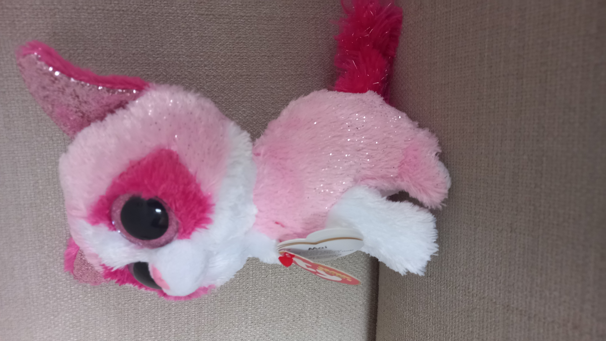

A loving and gentle valentines cat!
In 2014, Mai came to the world! She has detail on her nose, which is quite rare these days.
Her birthday is February 8, 2014. If you try to talk to her, be warned that she takes everything incredibly seriously.
She's one of the coolest looking cat breeds in my opinion, and many others!
2. She is the first Valentines Day Beanie Boo that doesn't have a heart! (On the outside)
3. She has the biggest ears in the entire Cat Club!
Her birthday is February 8, 2014. If you try to talk to her, be warned that she takes everything incredibly seriously.
She's one of the coolest looking cat breeds in my opinion, and many others!
Fun Facts:
1. She's covered in permanent glitter, which is a rare feature.
2. She is the first Valentines Day Beanie Boo that doesn't have a heart! (On the outside)
3. She has the biggest ears in the entire Cat Club!